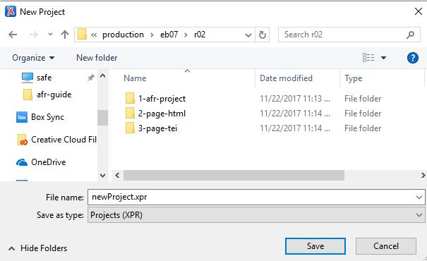

Create an XML-Project
Using Oxygen XML Editor to organize files.
Oxygen XML Editor organizes groups of files into a single
"project," to make it easier to work with the group and track relationships between group
member files. Be careful not to confuse the Oxygen
XML-project with the ABBYY FineReader
OCR-Project. While both are called "projects," they are
fundamentally different animals. To avoid confusion, this guide consistently uses either
"OCR-Project" or "XML-project," unless
the distinction is obvious from the context.
Procedure
- In Oxygen, select and navigate to the parent folder of the HTML files you want to convert (i.e. eb11/r01).
- Create a new Project in that directory ().
- Name the new project with the edition and section names, such as eb07-r02.xpr.
Example
Figure: File folder structure
